Каждый хозяин сайта рано или поздно задумывается о том, что ему нужен максимально качественный и удобный хостинг для своего интернет проекта, - будь то сайт-визитка, корпоративный сайт или что-то другое. Ваш сайт должен работать 24 часа в сутки и так постоянно. Он будет принимать большой поток людей, справляться с DDoS-атаками и в целом работать быстро. К выбору хостинга нужно подойти ответственно, ведь именно он будет справляться со всеми перечисленными функциями.
Путем проб и ошибок мне удалось выявить фаворита - компанию Fornex.com
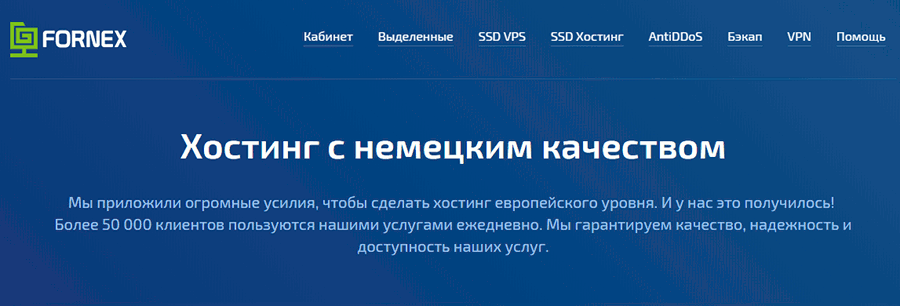
Перед тем, как начать пользоваться услугами сервиса, я решил немного узнать о нём. Fornex – европейский хостинг. Он предоставляет услуги уже свыше 10 лет и имеет более 54 000 постоянных клиентов. Среди них имеются Admitad, Lety Shops, ВИБУМ, BigPikcha, Pikabu, ЯПЛАКАЛъ и другие. Сразу подчеркиваю то , что у Fornex отличная репутация, ведь такие гиганские, популярные проекты однозначно разбираются в этом и выбирают для себя только лучший хостинг!
Какие услуги предоставляет хостер
Перечень услуг, которые предлагает компания достаточно велик:
Мой опыт работы с компанией
Для начала все стандартно, требуется пройти регистрацию.
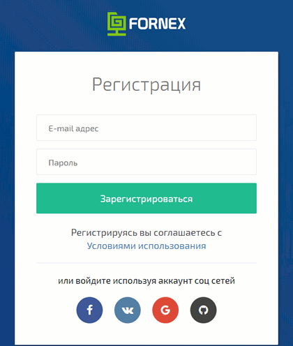
Все очень просто и быстро, регистрация происходит в три клика. После регистрации, можно увидеть и ознакомиться с интерфейсом хостинга, личным кабинетом, услугами и тд..
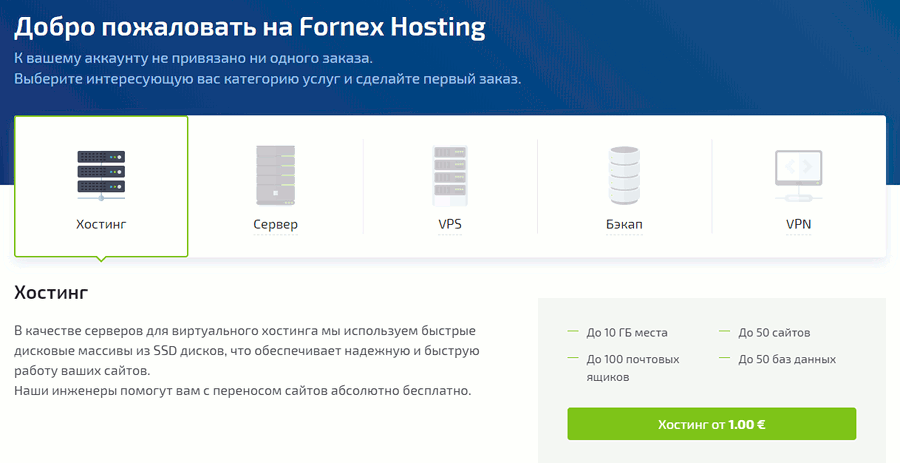
Для своей работы я использовал следующее оборудование:
Для использования услуги в браузере, потребуется скачать специальное расширение от компании Fornex. После установки вам нужно пройти авторизацию.
Сразу же, мы получаем доступ к IP из 10 различных стран, страны между собой можно переключать.
По итогу можно сказать, что цены не кусаются (в моем случае сумма оплаты составила 10€) и прямо пропорциональны качеству. После 24 часов работы могу с уверенностью сказать о том, что качество соединения на высшем уровне!
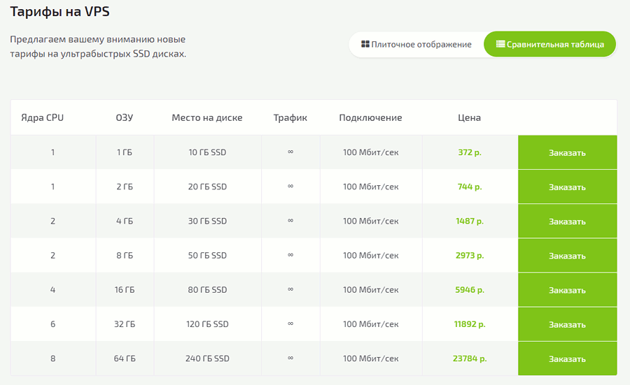
Если же ваш бюджет рассчитан на что-то среднее между виртуальным хостингом и сервером, то советую выбрать хостинг на виртуальных серверах. Я взял сервер из России с образом Ubuntu 18.04 LTS.
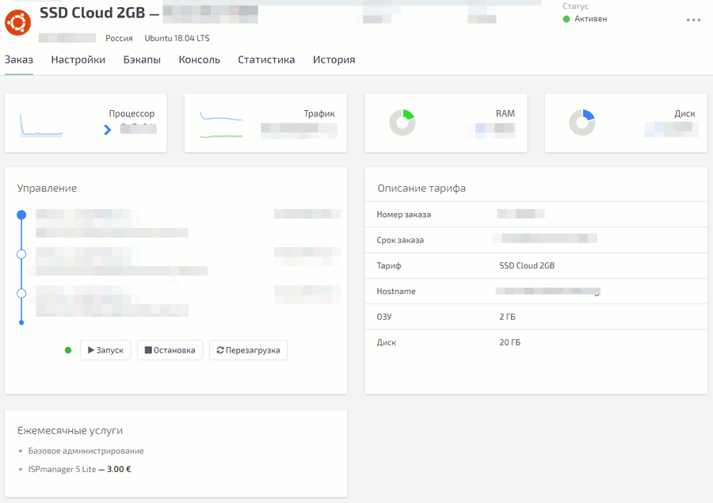
Сразу же стоит отметить, что можно установить любую операционную систему и набор приложений для реализации своих проектов. Цена достаточно демократична и начинается от 5€(в моем случае она составила 13€). Из самого основного можно сказать о шустрых NVMe накопителях в связке с серверными процессорами Intel Xeon линейки Gold\Silver\Platinum, что обеспечивает невероятную скорость работы и стабильность Ваших сайтов!. Абсолютно все данные находятся на RAID-10 массивах, что тоже важно. Стоит упомянуть и про FTP-хранилище, расположенное на RAID-10 массиве из SAS-дисков Enterprise класса.
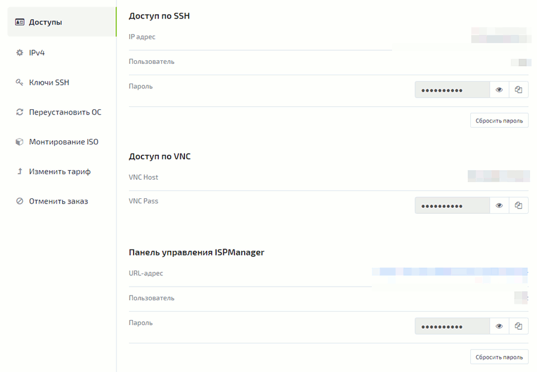
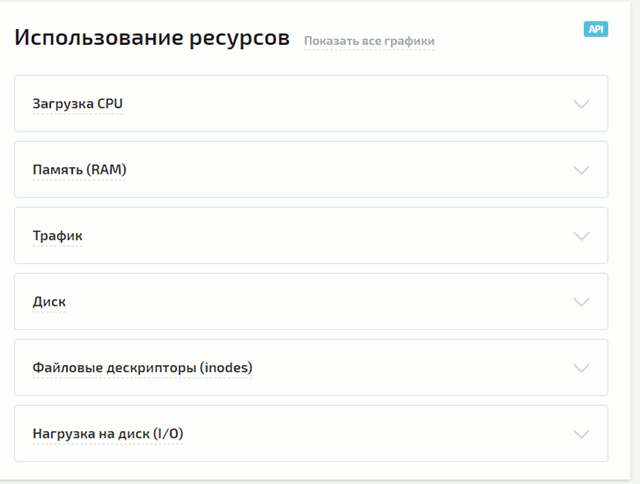
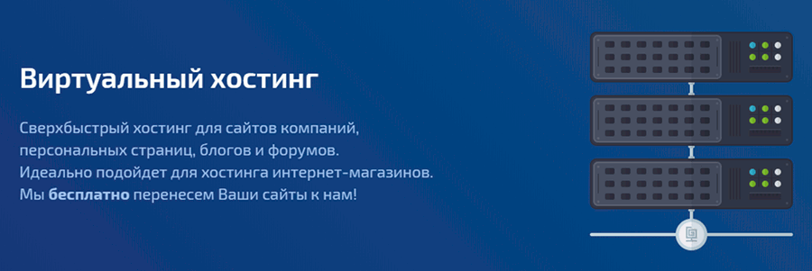
Именно он необходим для работы сайта. По выбранному мною тарифу мне предоставили 20 БД, 4-хядерный CPU, безлимитный трафик и максимально удобное управление.
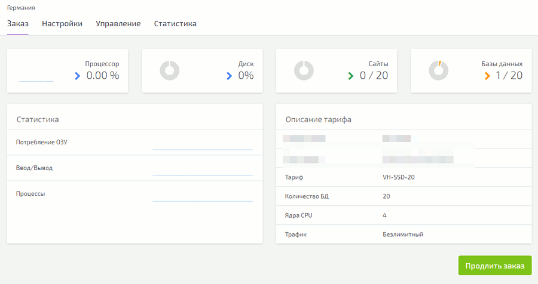
В одной панели управления хостингом имеются все необходимые настройки, включая домены, FTP, бэкапы и многое другое.
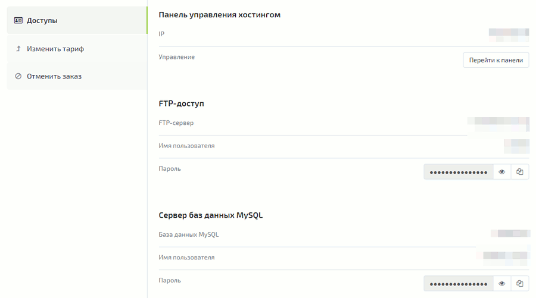
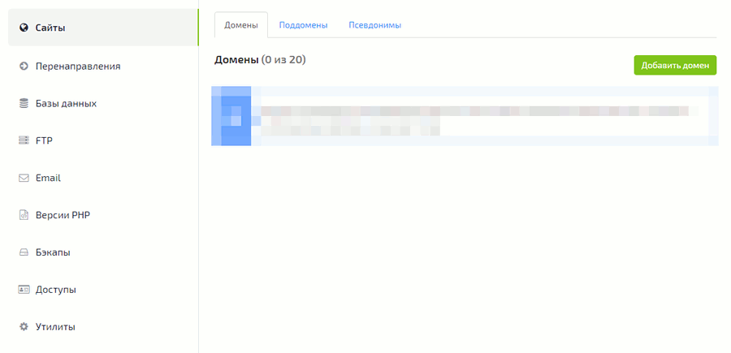
Виртуальный хостинг подойдет для сайтов компаний, персональных страниц, блогов, форумов и даже интернет-магазинов. Также, мало кто из российских компаний обладает собственными дата-центрами, обычно они просто перепродают ресурсы зарубежных хостеров, но физически не могут влиять на надежность и скорость работы. Небольшим, но все же приятным плюсом является бесплатное перенесение сайта.
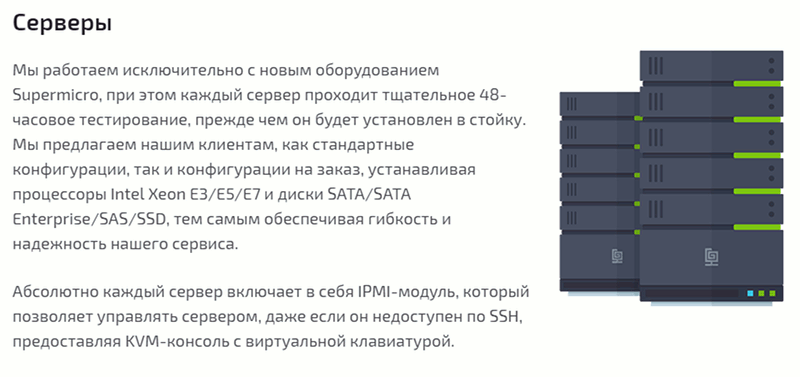
Стоимость выделенных серверов полностью себя оправдывает и начинается от 69 €. За эту цену вы получаете Xeon Silver 4110 с частотой процессора 8 × 2.1 ГГц, оперативкой 16 ГБ, 2-мя SSD дисками (каждый по 240ГБ). Ограничений трафика не имеется. На сайте компании также указано, что используется серверное оборудование производства Supermicro с большим выбором операционных систем. Для крупных интернет-магазинов такой вариант будет являться наиболее подходящим, нежели виртуальный хостинг.
Вердикт
Компания Fornex.com - это немецкая компания с собственными дата-центрами в Германии, России, Украине и Нидерландах. В перечень предоставляемых услуг входят хостинг, выделенные серверы SSD, AntiDDoS, бэкап , VPN, VPS SSD. Каждый из них имеет приемлемую цену и достойное качество.
В виде технологии виртуализации применяется только KVM, поэтому владельцу виртуального сервера гарантировано постоянное выделение ядер и оперативной памяти в соответствии с тарифом. Используется высокопроизводительное серверное оборудование с NVMe твердотельными накопителями, объединенными в массивы RAID-10, что важно для высоконагруженных проектов, постоянно обращающихся к БД. Для защиты своего трафика можно приобрести услугу VPN, возможность подключить общий или выделенный IP с выбором сервера из 10 стран, несколько протоколов для подключения и плагин для Google Chrome с изменение страны в 1 клик не покидая браузера.
Еще одним отличием компании от большинства предложений на рынке хостинга является бесплатная базовая техническая поддержка и перенос ваших сайтов, что существенно сокращает время на решение проблем при администрировании Linux систем.
Хостер постоянно совершенствует и расширяет линейку своих предложений. Вы можете начать работу даже с бесплатного 7-ми дневного пробного периода.